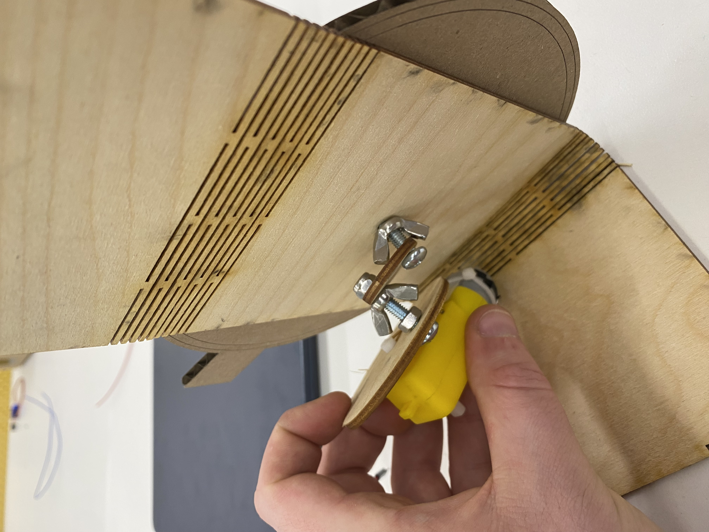
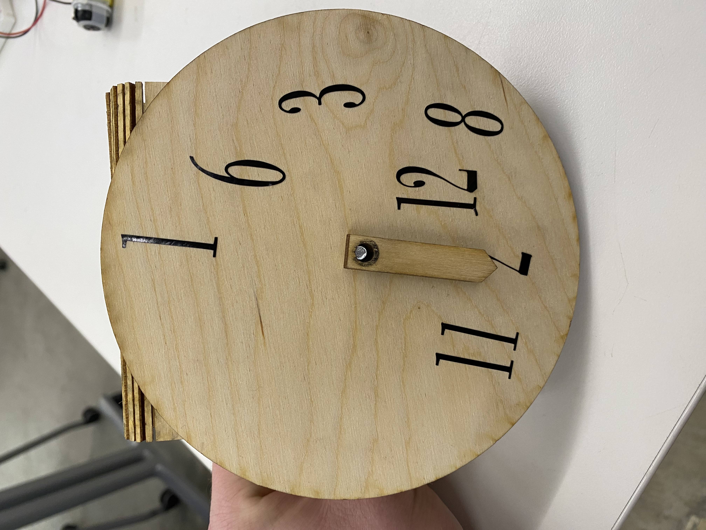
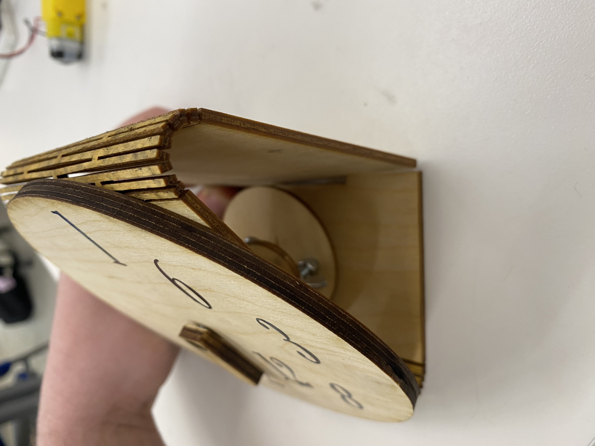
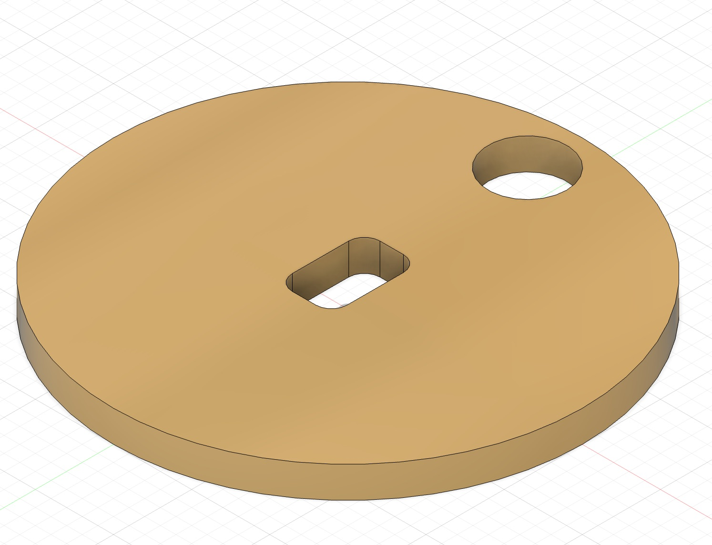
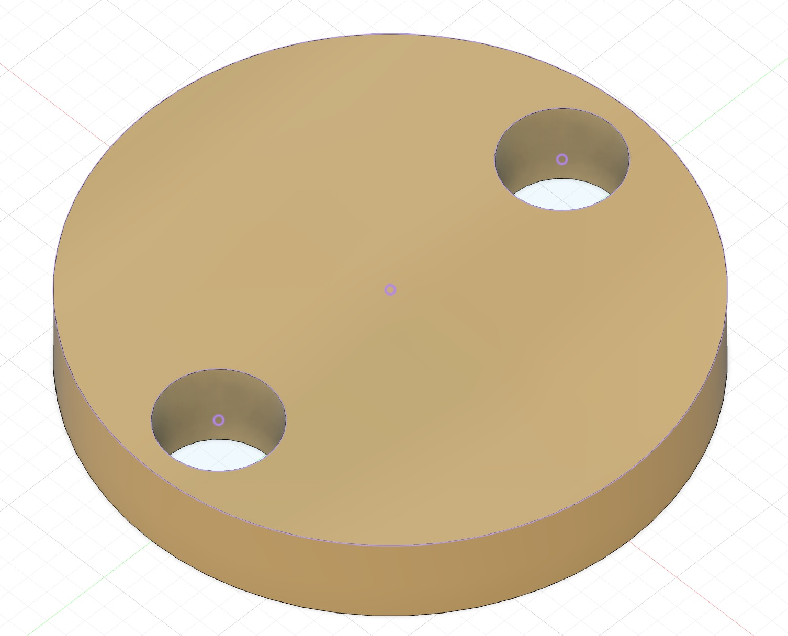

<div class="textcontainer">
<p class="margin"> </p>
<h3>Week 2.1: Fabrication and Circuitry</h3>
<h4>Kinetic Sculpture</h4>
In order to capture the chaos life of a student, I created a Wacky Clock kinetic sculpture. The clock represents what time management feels like for students that have to constantly juggle assignment deadlines—or deal with circumstances that are sometimes out of your control. In particular, the clock is comprised of a disoriented number scheme, two time arms, a rotar mechnanism to connect the DC motor with the clock, as well as a clock holder with a live joint. Furthermore, a DC motor is used to move the mechanisms to create kinetic movement.
<br></br>
During the learning process, I encountered numerous problems that required solving. First, the main problem was translating a 3D model in fusion into 2D components that required assembly. Since I could only print the face of the clock, I had to create the living-joint holder afterwards to pin all of the components (i.e., the clock arms, the alarms, and the face itself). After modeling the parts, the next challenge was finding a mechanism to turn the components to create kinetic movement. At first, I found that an M5 screw and lock was the best fit for the diameter of the hole in each component. However, after reaching this step, it was discovered that the DC motor wasn't compatible with the M5 screw—even with a lock attached to the end. Therefore, even though the components were able to move, there was no way to power them via DC motor. As a result, I went back into fusion, measured the gearbox adapter, and created the appropriate hole adaptor with fillets for the motor to fit into. Afterwards, when I had created the adapter component for the DC gearbox, it was discovered that the component would require several other circular CAMS for the revolution of the clock handle to occur due to alignment issues. And with the pressing issue of backlog for the laser cutter, I initially decided to substitute the M5 screw with wooden sticks in order to avoid making adjustments that pose of the risk of failure. The wooden sticks would have bee anchored into the DC gear motor adapter for simplification and a direct mechanism to create revolution drive for the clock arms.
<br></br>
However, the final iteration consists of focusing on rotating the face of the clock in an misaligned manner. This approach not only simplifies the mechanism to account for assembly backlog, but it also creates a desired kinetic sculpture that captures chaos of student life. Therefore, I reverted back to using the M5 screw as the revolution mechanism, attached three adapters to drive the mechanism from DC motor to the clock pinhole, and used the breadboard that was plugged into my laptop to catalyze power into the motor.
<br></br>
For measuring the current, I measured the resistance of the DC motor running through the H-Bridge power drive into the breadboard. Since the voltage was given as 5V through the breadboard, the voltmeter was placed in the ground and power source to measure the resistance—which then allowed the current to be calculated. However, after the final product was assemebled, it turned out the the thickness of the wood that was used for the face was too heavy for the driving mechanism to rotate—rendering the fabcrication useless unless the following changes are made. (1) Increase the size of the living-hindged clock shell with a dedicated placeholder for the DC motor; (2) Decrease the thickness of the clock face; and (3) Create a new rotating mechanism, using gears instead of circular CAMS, to account for the added weight of the device.
<br></br>
I = V/R -> I = 5V/16.70 -> I = 0.2994 A
<br></br>
<iframe src="https://myg338979.autodesk360.com/shares/public/SH30dd5QT870c25f12fcfef5e85d9b4fe38f?mode=embed" width="640" height="480" allowfullscreen="true" webkitallowfullscreen="true" mozallowfullscreen="true" frameborder="0"></iframe>
<p class="margin"> </p>



<p class="margin"> </p>
<div class="center-colum">
<img src="./a2.jpeg" alt="Assembly" width="500">


<br></br>
<p class="margin"> </p>
<div class="center-colum">
<img src="./a.jpeg" alt="Assembly" width="500">
<img src="./a1.jpeg" alt="Assembly" width="500">
<br></br>
<video controls>
<source src="a6.mp4" type="video/mp4">
</video>
</div>